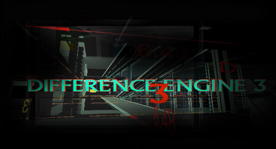
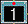
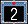
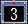
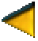
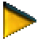
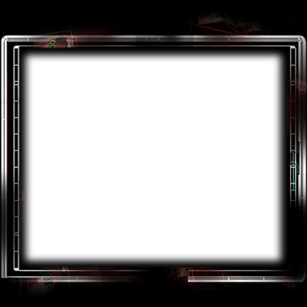

The Difference Engine #3 is an interactive, multi-user, telerobotic sculpture that uses the architecture of the ZKM Media Museum as a template and the visitors to the museum as the interface. The result is a virtual life cycle complete with Avatars born of a meeting between museum visitors and their port of entry into the virtual world...
(continued in Purgatory)
Port notes: the original project depended on a server (Laravel + Blend4Web scenes + socket.io + live camera feeds). This static port keeps the look & navigation and replaces the Blend4Web WebGL scenes with Three.js. Drag to orbit in 3D pages.